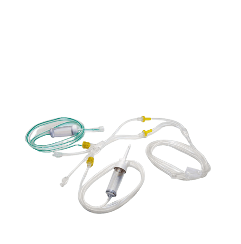
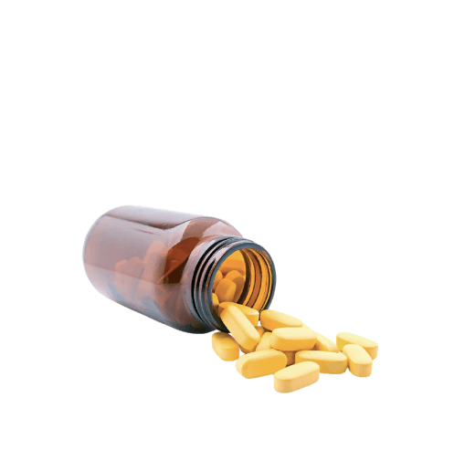
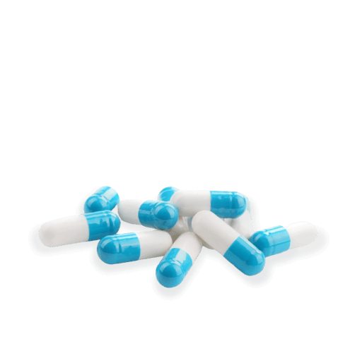
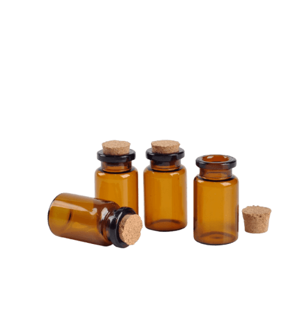
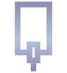
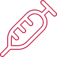

Москва


Как проходит детоксикация
Звонок в клинику
Звонки принимаются круглосуточно
Через 30 минут
Детоксикация у вас дома или в клинике
Через час
Пациент заснет здоровым сном
Что входит в стандартную детоксикацию?

Дезинтоксицирующие средства
Капельницы

Снятие тревожности и др.
Седативные препараты

Защита клеток мозга
Нейропротекторы

Восстановление функции сердца
Кардиопротекторы
Позвоните нам
Мы знаем, как избавиться от зависимости раз и навсегда
Стоимость детоксикации на дому
Выезд врача включает консультацию, диагностику, кардиограмму и назначение препаратов.
Снятие ломки "Стандарт" включает в себя инфузионную терапию с комплексом:
- Седативных препаратов (успокаивающие), снимающих следующие симптомы: высокую температуру, тремор, судороги конечностей и боли в суставах, восстанавливается аппетит и сон;
- Нейропротекторов - питательных веществ и витаминов для головного мозга и центральной нервной системы, восстанавливающие память и внимание;
- Детоксицирующих средств - медикаментов, выводящих продукты распада наркотических препаратов из органов и тканей, полностью очищающих организм.
Двойное очищение включает в себя:
- Зарубежные седативные препараты (успокаивающие), снимающие следующие симптомы: психоз, тремор, судороги конечностей, восстанавливается аппетит и внимание;
- Нейропротекторы - питательные вещества и витамины для головного мозга и центральной нервной системы, восстанавливающие память и внимание;
- Детоксицирующие средства - медикаменты, выводящие метаболиты из органов тканей, полностью очищая организм.
При сроках употребления от 6 месяцев. Снятие ломки "Двойное очищение" включает в себя:
- Проведение инфузионной терапии с зарубежными седативными препаратами (успокаивающие), снимающие следующие симптомы: высокую температуру, психоз, тремор, судороги конечностей и боли в суставах, восстановление аппетита и сна;
- Нейропротекторами - питательными веществами, витаминами для головного мозга и центральной нервной системы, восстанавливающими память и внимание;
- Детоксицирующими средствами - медикаментами, выводящими метаболиты алкоголя из органов и тканей, полностью очищая организм.
Оснащение нарколога
-
 Аппарат ЭКГ
Аппарат ЭКГ -
Лекарства
-
Кардиомонитор
-
Глюкометр
Стоимость детоксикации в стационаре
Детоксикация от наркотиков включает в себя инфузионную терапию с комплексом:
- Седативных препаратов (успокаивающие), снимающие следующие симптомы: высокую температуру, психоз, тремор, судороги конечностей и боли в суставах, восстанавливается аппетит и сон.
- Нейропротекторов - питательных веществ и витаминов для головного мозга и центральной нервной системы, восстанавливающие память и внимание;
- Детоксицирующих средств - медикаментов, выводящих продукты распада наркотических препаратов из органов и тканей, полностью очищающих организм.
С возможными осложнениями в виде психоза, депрессивных состояний, шизофрении, биполярного расстройства, галлюцинаций повышения артериального давления и температуры тела, нарушения работы внутренних органов, абсцессов, гангрен. Детоксикация от наркотиков "Стандарт" включает в себя:
- Зарубежные седативные препараты (успокаивающие), снимающие следующие симптомы: высокую температуру, психоз, тремор, судороги конечностей и боли в суставах, восстанавливается аппетит и сон.
- Нейропротекторы - питательных веществ и витаминов для головного мозга и центральной нервной системы, восстанавливающие память и внимание;
- Детоксицирующие средства - медикаменты, выводящие продукты распада наркотических препаратов из органов и тканей, полностью очищая организм.
Снятие ломки "Стандарт" включает в себя инфузионную терапию с комплексом:
- Седативных препаратов (успокаивающие), снимающих следующие симптомы: высокую температуру, тремор, судороги конечностей и боли в суставах, восстанавливается аппетит и сон.
- Нейропротекторов - питательных веществ и витаминов для головного мозга и центральной нервной системы,восстанавливающие память и внимание;
- Детоксицирующие средства - медикаменты, выводящие продукты распада наркотических препаратов из органов и тканей, полностью очищая организм.
С возможными осложнениями в виде психоза, депрессивных состояний, шизофрении, биполярного расстройства, галлюцинаций повышения артериального давления температуры тела, нарушения работы внутренних органов, абсцессов, гангрен. Детоксикация от наркотиков включает в себя:
- Зарубежные седативные препараты (успокаивающие), снимающие следующие симптомы: высокую температуру, психоз, тремор, судороги конечностей и боли в суставах, восстанавливается аппетит и сон;
- Нейропротекторы - питательные вещества и витамины для головного мозга и центральной нервной системы, восстанавливающие память и внимание;
- Детоксицирующие средства - медикаменты, выводящие продукты распада наркотических препаратов из органов и тканей, полностью очищая организм.
С возможными осложнениями в виде психоза, депрессивных состояний, шизофрении, биполярного расстройства, галлюцинаций повышения артериального давления температуры тела, нарушения работы внутренних органов, абсцессов, гангрен. Детоксикация включает в себя:
- Зарубежные седативные препараты (успокаивающие), снимающие следующие симптомы: высокую температуру, психоз, тремор, судороги конечностей и боли в суставах, восстанавливается аппетит и сон.
- Нейропротекторы - питательные вещества и витамины для головного мозга и центральной нервной системы, восстанавливающие память и внимание;
- Детоксицирующие средства - медикаменты, выводящие продукты распада наркотических препаратов из органов и тканей, полностью очищая организм.
Отличие от обычных капельниц в безболезненном и быстром очищении организма. Процедура проводится всего за 8 часов, что равноценно 7 дням под обычными капельницами.
Оснащение клиники
-
Аппарат ИВЛ
-
Реанимационное отделение
-
Дефибриллятор
-
 Наркозные аппараты
Наркозные аппараты

Получить компенсацию на лечение
Узнайте подробнее условия компенсации или оставьте заявку прямо сейчас.
Фотогалерея клиники
Помощь на дому
Организация стационара на дому
Наличие лицензии на выездную помощь
Преимущества нашего лечения
Работаем 24/7
Доезжаем до любой
точки города за 30 мин.
точки города за 30 мин.
Медицинская лицензия
Клиника лицензирована по 26 специальностям, в том числе
на оказание медицинской помощи вне стационара (на дому)
Врачи высшей категории
В нашем штате более 4-х врачей высшей категории, а также реаниматологи, психотерапевты
Удобное расположение
Подберите наиболее близкий к Вам филиал
Анонимность — наш приоритет
Лечение проходят многие медийные личности, инкогнито гарантировано
Эффективность гарантирована
При комлексном лечении результативность гарантирована
Клиника размещенна в здании больницы
Медицинская помощь любой сложности оказывается круглосуточно
Гибкая ценовая политика
На любой кошелек мы подберем оптимальное лечение. Финансовые средства не главное в вопросах жизни и
смерти
Наши врачи
Стаж 24 года
Махова Виктория Юрьевна
Врач психиатр, кандидат медицинских наук
Стаж 19 лет
Назаренко Юрий Владимирович
Врач психиатр, кандидат медицинских наук
Стаж 18 лет
Ильин Олег Лендрикович
Клинический психолог, психотерапевт

Стаж 15 лет
Давиденко Наталья Викторовна
Клинический психолог, нейропсихолог, кандидат психологических наук
Гарантии при лечении наркотической зависимости

Не хочет лечиться?
9 из 10 зависимых отрицают проблему. И не готовы на конкретные шаги в лечении.
Наши специалисты приедут к зависимому домой и убедят его поехать в клинику.
10 из 10
соглашаются
Гарантируем отсутствие рецидивов
на срок до 6 месяцев
При условии соблюдения всех рекомендаций клиники.
Если болезнь вернется, то проведем 3 амбулаторные консультации бесплатно и снизим стоимость лечения в стационаре на 50%.
Гарантируем вам 100% анонимность
Во время и после лечения
Мы никогда не разглашаем информацию о наших пациентах.

Медицинская лицензия по психиатрии-наркологии
Гарантия качества
Истории наших пациентов
Карта клиник с лечением по виду зависимости
Карта наркологических клиник
Показания к детоксикации наркомана
Детоксикация от наркотиков направлена на очищение организма от продуктов распада запрещенных веществ. Метод помогает справиться с наркозависимостью на физическом уровне. Адекватно подобранная схема детоксикационной терапии нормализует все физиологические функции жизненно важных органов и систем, на фоне чего они могут полноценно работать дальше без поступления очередной дозы наркотического вещества.
Детоксикация от наркозависимости — это начальный этап сложного лечения, основанный на медикаментозных и немедикаментозных методиках. Вне зависимости от того, кто обратился за наркологической помощью — сам пациент или его близкие, в 70% случаев человек поступает в клинику либо в состоянии наркотической интоксикации разной степени тяжести с характерным симптоматическим комплексом, либо на фоне продолжительного и активного употребления запрещенных веществ.
Желая сохранить анонимность либо по другим мотивам, многие пациенты и их родственники вызывают нарколога на дом в надежде получить быструю помощь. Подобный подход оправдан при условии относительно недавнего применения наркотических средств (стаж зависимости менее 1 года), употребления растительных каннабиноидов — гашиша, конопли, марихуаны или спайса, симптомов абстиненции, выраженных в легкой или умеренной степени тяжести.
То есть детоксикация на дому показана далеко не во всех случаях. Если у наркозависимого имеются следующие состояния, лечение рекомендуется проводить в условиях стационара:
- передозировка наркотиков;
- общее тяжелое состояние пациента;
- употребление опиатов, синтетических наркотиков и стимуляторов;
- полинаркомания — смешивание нескольких ПАВ и алкоголя;
- стаж наркозависимости более года;
- абстинентный синдром, ломка;
- острые психотические расстройства.
Все эти клинические ситуации являются показаниями для госпитализации наркозависимого в стационар. Также детоксикационная терапия от наркотических веществ показана при наличии у человека самостоятельного желания пройти лечение и справиться с зависимостью, имеющемся страхе перед очередной «ломкой», выраженных соматических расстройствах на фоне употребления ПАВ.
В наркологических клиниках Москвы пациенту будет оказана специализированная экстренная помощь, направленная на предупреждение серьезных осложнений для здоровья. За ним устанавливается круглосуточное наблюдение врачом-наркологом и психиатром, что позволяет отследить любые изменения в психическом и физическом состоянии подопечного и в случае необходимости принять соответствующие меры.
Преимуществами проведения детоксикации в клиниках Москвы:
- индивидуальный подход, отсутствие стандартных и универсальных тактик воздействия;
- забота о пациенте — медицинские вмешательства будут проводиться требуемое количество раз, метод «общепринятых двух капельниц» с последующей выпиской из стационара исключен;
- комплексное оказание помощи — сочетание медикаментозных и немедикаментозных мер для максимального быстрого улучшения самочувствия пациента;
- использование медикаментов с доказанной эффективностью и безопасностью;
- анонимность по желанию пациента.
После стабилизации состояния пациента подбирается схема дальнейшей помощи, преимущественно амбулаторной, для восстановления организма и окончательного избавления от наркозависимости.
Цели детоксикации от наркотиков
Тактика детоксикации от наркотиков помогает не только очистить организм от токсинов, но и освободить его от сформированной зависимости от психоактивных веществ на физическом уровне. Систематическое употребление наркотиков провоцирует выраженную интоксикацию, опасную для организма дисфункциями жизненно важных органов и систем. Поэтому применение детокса от наркотиков преследует следующие цели:
- очищение системы кровообращения от метаболитов запрещенных веществ;
- нормализация метаболизма на клеточном уровне;
- восстановление работы ЦНС;
- стабилизация водно-солевого баланса;
- улучшение функционирования жизненно важных органов и систем;
- укрепление иммунитета и защитных механизмов организма.
То есть вместе с очищением организма, детоксикационная терапия направлена на реабилитацию физиологических и психических качеств пациента. В комплексе достигнутый реализованный потенциал помогает эффективно отказаться от наркозависимости.
Методы
Детоксикация наркозависимых — это сложный комплекс мер, с которого начинается этап выздоровления человека, его отказ от дальнейшего употребления наркотиков. Существует два основных метода лечения: ультрабыстрая опиоидная детоксикация (УБОД) и классический подход. В дополнение к ним специалисты Московских наркологических клиник предлагают возможности аппаратного детокса. Методики отличаются по срокам и условиям проведения.
Классическая детоксикация
После госпитализации в клинику пациент получает медикаментозное лечение. В большинстве случаев в его основу входит инфузионная терапия — помогает восстановить кислотно-щелочной и электролитный баланс, провести гемокоррекцию и купировать клинику обезвоживания. Включает капельное введение физиологических растворов (Натрия хлорид, Реополиглюкин, 5% глюкоза) с диуретиками (форсированный диурез) и адсорбентами.
Все чаще в рамках инфузионной терапии практикуется применение озона — способ основан на предварительном смешивании газа с физрастворами. Озонотерапия заметно смягчает симптомы наркотической ломки, защищает печень от разрушающего влияния метаболитов запрещенных средств, улучшает состояние иммунной системы пациента и препятствует обострению вирусных гепатитов В и С при наличии этих диагнозов.
Дополнительно наркозависимый получает широкий спектр медикаментозной поддержки:
- снотворные — при абстинентном синдроме часто возникают расстройства сна;
- анальгетики — устранение болевого синдрома;
- нормотимики (тимостабилизаторы) и нейролептики — снятие психотической симптоматики, характерной для отмены ПАВ;
- транквилизаторы — купирование симптомов тревожности, панических атак и пр.;
- гепатопротекторы — восстановление работы печени;
- цитопротекторы, анксиолитики, антигипоксанты — нормализация метаболизма на клеточном уровне, защита жизненно важных органов от разрушающего действия токсинов;
- диуретики — устранение отечности;
- адреноблокаторы, гипотензивные и антиаритмические препараты — по показаниям, нормализация функционирования сердечно-сосудистой системы.
Если речь идет о тяжелой стадии интоксикации, лечение дополняется методами аппаратного детокса:
- Плазмаферез — очищение крови от токсинов искусственным способом. Проводится посредством забора плазмы пациента (до 30%), проведения ее через специальные мембранные фильтры центрифуги, выделения чистой эритромассы и уничтожения плазмы с вредными веществами. После этого очищенная плазма возвращается обратно в системный кровоток пациента, дополнительно выполняется плазмозамещение коллоидными и кристаллоидными растворами.
- Гемодиализ — механическое очищение крови в случаях тяжелых химических отравлений аппаратом «искусственная почка». Метод помогает поддержать функционирование почечной системы и печени, снимая с них высокую нагрузку.
- Ксенонотерапия — ингаляторное очищение крови путем вдыхания инертного газа. Метод быстро улучшает самочувствие человек, снимая клинические проявления ломки и абстиненции — головные боли, раздражительность, психомоторное возбуждение, тревожность. Спустя 15 минут после процедуры ксенонотерапии многие пациенты засыпают, что актуально для лиц с тяжелыми расстройствами сна.
Перечисленные способы медикаментозного очищения организма и аппаратного детокса по показаниям специалиста могут быть дополнены вспомогательными манипуляциями — биологической детоксикацией, основанной на приемах массажа, акупунктуры, физиолечения. В среднем при классической детоксикации пациент пребывает в клинике от 3 до 10 суток. В ходе наблюдения за ним, врач с высокой степенью вероятности может спрогнозировать риск развития осложнений, рецидива наркозависимости и назначить меры по дальнейшему лечению и профилактике.
Если пациент поступил в клинику уже с возникшими осложнениями — в бессознательном состоянии, с психотическими расстройствами, тяжелыми патологиями сердечно-сосудистой системы, судорогами или в коме, специалисты наркологической клиники проводят необходимые лечебно-профилактические мероприятия в условиях реанимационного отделения и интенсивной терапии. В большинстве наркологических клиник Москвы трудятся врачи-реаниматологи и имеются все условия для оказания пострадавшим неотложной помощи.
Ультрабыстрая опиоидная детоксикация (УБОД)
Широко востребованный и эффективный метод быстрой детоксикации организма при опиоидной ломке — результата злоупотребления синтетических наркотиков, героина, амфетамина, метадона. Перед началом процедуры детокса пациента погружают в состояние наркоза на 4-6 часов для отключения всех болевых рецепторов. Пока он спит, в его организм интенсивно вводится блокатор опиоидных рецепторов — Налтрексон (Налоксон). Средство быстро нейтрализует и вытесняет опиум и его производные, провоцируя ускоренное развитие абстинентного синдрома.
Если в обычном состояния абстиненция вызывает у человека сильнейшие симптомы наркотической ломки, то во время наркоза он их не почувствует. Дополнительно ему могут быть введены препараты, купирующие неприятный комплекс отмены ПАВ. Через 4-6 часов медикаментозный сон подходит к концу, пациент отходит от наркоза и может чувствовать лишь остаточные явления ломки, в отношении которых могут быть применены методы ксенонотерапии и физиолечения.
Важно отметить, что УБОД — сложная процедура, перед проведением которой важно пройти клиническое обследование, включающее анализы мочи и крови, уточняющие их биохимический статус, группу и резус-принадлежность, наличие ВИЧ-инфекции, сифилиса, гепатитов С и В. Также назначается рентгенография грудной клетки и ЭКГ. Метод УБОД не проводится при обострении патологий сердца и сосудов, печени и почек, органических поражениях ЦНС.
Эффективнее проводить детоксикацию после применения наркотиков на фоне поддержки психолога или психотерапевта с планированием дальнейшей реабилитации. Этот подход позволяет добиться высоких результатов даже в изначально сложных клинических случаях. Психотерапия помогает пациенту осознать весь негативный потенциал наркозависимости и необходимость ее преодоления. Полное выздоровление возможно при условии установившего доверия и сотрудничества между доктором и пациентом.
Стоимость
Цены на детоксикацию зависят от анамнеза и общего состояния пациента, наличия у него сопутствующих психических и соматических заболеваний, объема оказанной медикаментозной и немедикаментозной помощи, статуса медицинского учреждения, квалификации медперсонала и условий пребывания. Назвать общую стоимость запланированных процедур врачи наркологической клиники могут после первичного осмотра и минимального обследования наркозависимого.